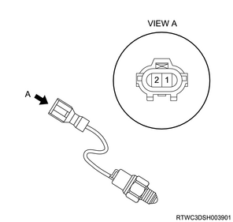
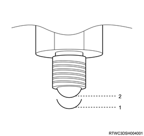
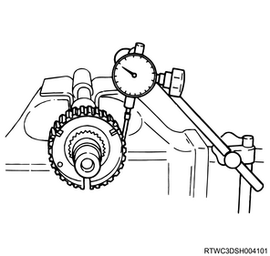
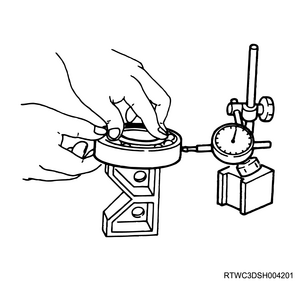
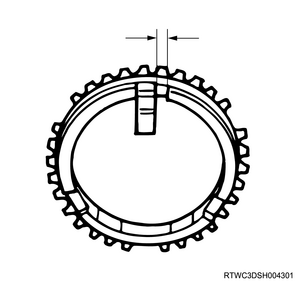
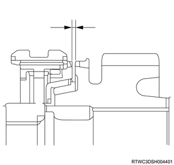
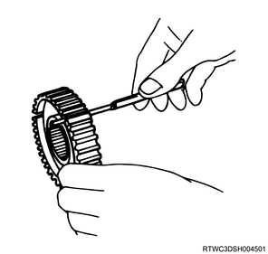
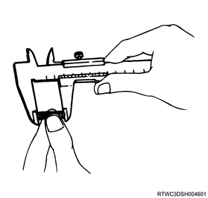
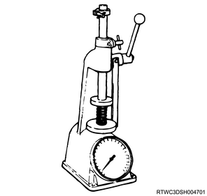

Caution
- If any wear, damage, or other abnormalities are found, repair or replace the defective parts.
- Wash all parts with clean detergent, and confirm that old oil, metallic grain, dirt, and foreign materials are completely removed.
- Blow compressed air into each oil feed port and channel in each case half to remove off foreign materials and residual detergent.
1. Inspect the chain.
Note
- Inspect the surface that makes contact with the sprocket for excessive wear or damage.
- Replace if wear or damage is excessive.
- If there is evidence indicating that the chain interferes the inner wall of transfer cover, replace the chain.
- If the chain and the sprocket do not engage due to chain stretch, replace the chain.
2. Inspect the drive sprocket.
Note
- Inspect the sprocket tooth surfaces for excessive wear or damage.
- Inspect the gear splines for burrs, chipping, wear, or any evidence of damage.
- Repair small cracks or scratches by using an oil stone.
- If excessive wear or damage is found, replace the defective parts.
- If excessive wear or damage is found on the sprocket inside sliding surface, replace the defective parts.
3. Inspect the gear.
Note
- Inspect the gear tooth surfaces for excessive wear or damage.
- Inspect the gear splines for burrs, chipping, wear, or any evidence of damage.
- Repair small cracks or scratches by using an oil stone.
- If excessive wear or damage is found, replace the defective parts.
4. Inspect the switch.
Note
- Inspect the 2-4 and neutral switches for continuity.
- If any abnormality is found, replace the 4H and 4L switches.


| Switch stroke | 2-4 switch signal | Neutral switch signal |
| Terminal 1-2 | Terminal 1-2 |
| 1 | Open | Close |
| 2 | Close | Open |
5. Inspect the oil pump.
Note
- Remove foreign matters from the strainer, and if it is damaged, replace the strainer.
- If the shaft insertion section is excessively worn or damaged, replace the oil pump assembly.
6. Inspect the clutch hub.
Note
- Inspect the clutch hub spline for play.
- Set the dial gauge to the clutch hub, and then move the clutch hub right-to-left to read the fluctuation.
- If the measured value exceeds the limit, replace the clutch hub.
Standard： 0.0 to 0.1 mm { 0.000 to 0.004 in }
Limit： 0.2 mm { 0.008 in }

7. Inspect the bearing.
Note
- Inspect the status of all needle bearings and ball bearings.
- Completely wash the bearings with cleaning fluid and blow compressed air.
Caution
- Slowly turn the bearing by hand; do not rotate it quickly.
- If the bearing rotates quickly, it may damage the roller.
Note
- Apply diesel oil to the bearing, and inspect the condition of the bearing while slowly rotating the race.
- Inspect play of the ball bearing by using the dial indicator.
- If the measured value exceeds the limit, replace the ball bearing.
Limit： 0.2 mm { 0.008 in }

8. Inspect the transfer synchronizer assembly.
Note
- The synchronizer hub and the sliding sleeve have been selected for the optimal combination, and therefore, do not change the original combination.
- Clean the synchronizer components with clean cleaning fluid and dry.
- Inspect components for the followings.
- Gear wear, damage, chipping, burrs, breakage
- Replace the key or spring if wear, cracking, or deformation is found.
- If wear, chipping, or burrs cannot be repaired using a grindstone or crocus cloth, replace the component.
9. Inspect the block ring.
Note
- Inspect the block ring and its clearance.
- Measure the clearance between the block ring and the insert by using a vernier caliper.
- Replace the block ring and the insert if the measured value exceeds the limit.
Standard： 2.46 to 2.74 mm { 0.097 to 0.108 in }
Limit： 3.0 mm { 0.118 in }

10. Inspect the synchronizer cone.
Note
- Inspect the 2WD-4WD synchronizer and 3 cones.
- Measure the clearance between the block ring and the dog-teeth with a feeler gauge.
- Replace the 2WD-4WD synchronizer assembly if the measured value exceeds the limit.
Standard： 1.5 mm { 0.059 in }
Limit： 0.8 mm { 0.031 in }

11. Inspect the clutch hub.
Note
- Use a feeler gauge to measure the clearance between the clutch hub and the insert.
- Replace the clutch hub and the insert if the measured value exceeds the limit.
Standard： 0.01 to 0.19 mm { 0.0004 to 0.0075 in }
Limit： 0.3 mm { 0.012 in }

12. Inspect the detent spring.
Note
- Inspect the detent spring for deformation, cracking, or wear, and replace if any abnormalities are found.
- Measure the free length of the detent spring using a vernier caliper.
- If the measured value is smaller than the limit, replace the detent spring.
Standard： 23.4 mm { 0.921 in }
Limit： 22.8 mm { 0.898 in }

Note
- Measure the tension of the detent spring using the spring tester.
- If the measured value is smaller than the limit, replace the detent spring.
Compressed height： 18.7 mm { 0.736 in }
Standard： 68.6 to 88.2 N { 7.0 to 9.0 kg / 15.4 to 19.8 lb }

13. Inspect the shift arm.
Note
- Inspect the shift arm for wear, deformation, or scratching, and replace if any abnormalities are found.
- Measure the thickness of the shift arm using a micrometer.
- If the measured value is smaller than the limit, replace the shift arm.
Standard： 7.60 to 7.85 mm { 0.299 to 0.309 in } H-L shift arm
Limit： 7.0 mm { 0.276 in } H-L shift arm
Standard： 9.60 to 9.85 mm { 0.378 to 0.388 in } 2-4 shift arm
Limit： 9.0 mm { 0.354 in } 2-4 shift arm